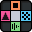

Bindless Labs provides software development services and develops music-related apps.
 FamiStudio |
KiraStudio |
|
FamiStudio is a free, open-source music editor for creating authentic Nintendo Entertainment System and Famicom soundtracks. Designed for both chiptune musicians and NES homebrew developers, it features a modern DAW-style piano roll interface, instrument and envelope editing, DPCM sample support, MIDI input/export, and support for expansion audio chips like VRC6 and FDS. FamiStudio can import FamiTracker projects and export to NSF, ROM, WAV, video, and multiple game-ready formats across Windows, macOS, Linux, Android, and iOS. |
KiraStudio is a lightweight, cross-platform music studio built for clarity, automation, and sound creation. Compose in a fully featured piano roll, build custom instruments by assembling "generators", and connect everything through flexible effect chains. It puts automation at its core, you can shape nearly any parameter over time using ADSR envelopes, LFO-style curves, and step sequences with powerful editors. With support for SoundFonts (SF2/SF3), sampling, wavetable and FM synthesis, plus MIDI import/export and WAV/OGG export, KiraStudio scales from quick sketches to full projects. A focused interface keeps you in the creative flow on desktop and mobile. |
Copyright 2026 Bindless Labs Limited